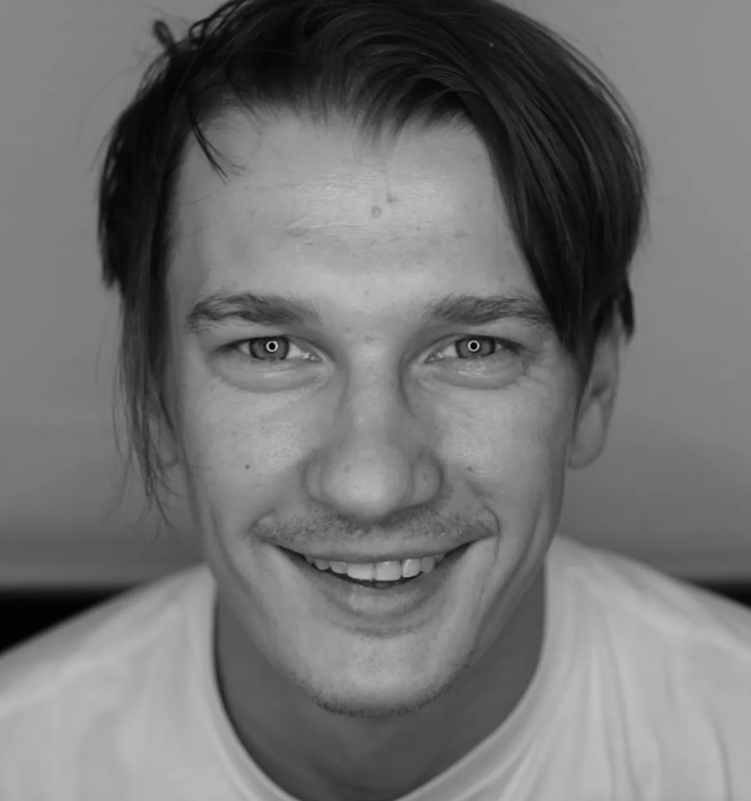
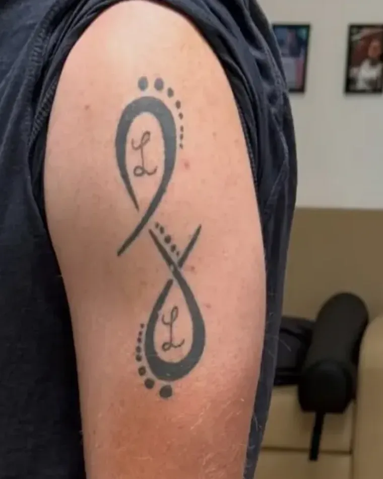
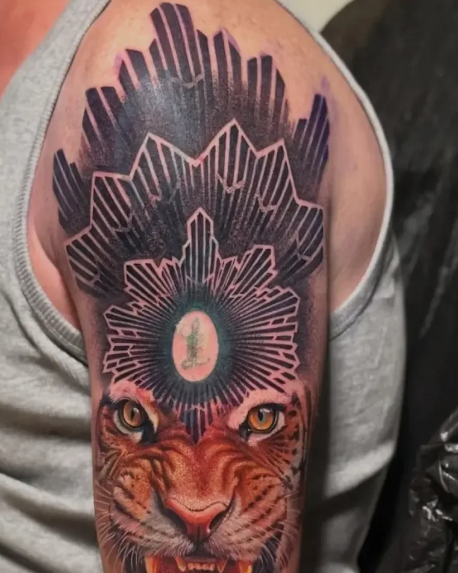
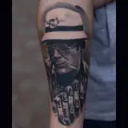
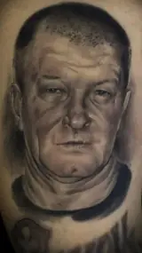
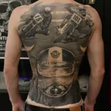
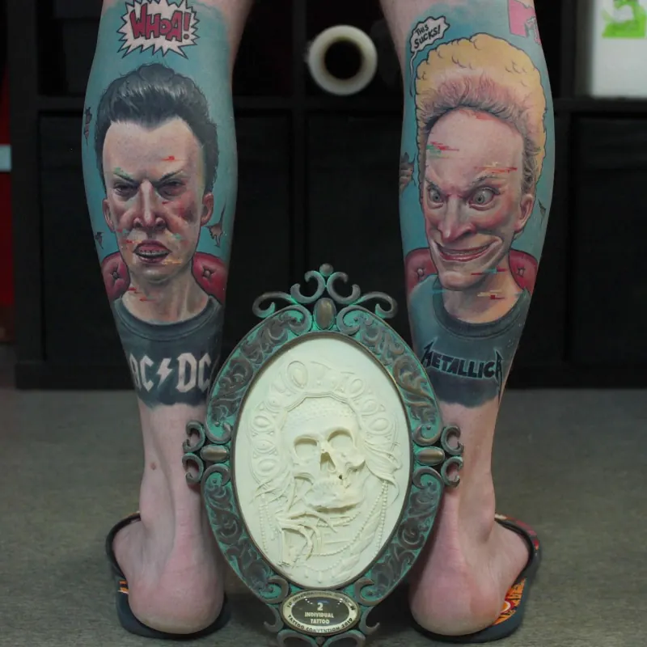
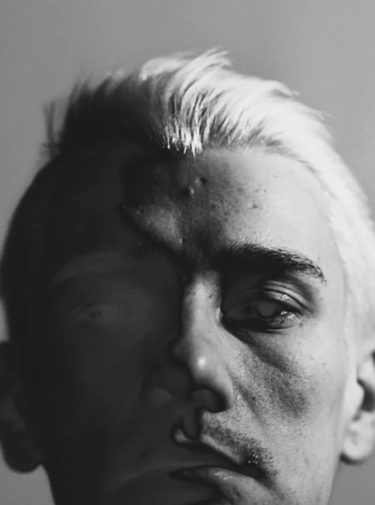

Привет! Я Коля. Татуирую 26 лет, сейчас — в Москве, в студии «Локация».

Татуировка — ювелирная работа,
которая пройдёт с тобой всю жизнь
Рисовать я начал очень рано. Отец — художник, у него было много альбомов, и мне было интересно их рассматривать. Он стал моим первым учителем и главным вдохновением.
Первую машинку взял в руки в 1999-м, мне только исполнилось 14, — её собрали из старой электробритвы. Информации о татуировке почти не было, всё осваивал методом проб и ошибок: иголки паяли сами, трансферной бумаги не было, работали канцелярскими чернилами. Первую татуировку сделал себе на ноге, потом — друзьям и родным.
В юности в приоритете была музыка, но после 2007-го я выбрал один путь — татуировку. Мне понадобилось лет девять, чтобы понять, что моя работа чего-то стоит. В 2008-м я стал татуировать профессионально, а в 2012-м мы с Яриком Волковым открыли свою студию — начинали в подвале.
В 2015-м поехал на первую конвенцию и получил первую награду. Конвенция — лютая штука: очень заряжает, очень много приобретаешь. В 2019-м работал в Германии и за год прогрессировал огромными шагами.
Сейчас делаю реализм, портреты, ар-деко и dark art. При правильном уходе татуировка с годами практически не меняется — значит, и делать её нужно как вещь на всю жизнь. За эти годы у меня сложились свои принципы.
ПРИНЦИПЫ
Работа кропотливая, требует терпения — и с моей стороны, и с твоей. Но результат того стоит.
Сначала основа,
потом деталь
В портрете главное — сходство. Его строишь формой, соотношением света и тени, и только в конце приходит деталь. Многие мастера закапываются в детали и забывают про основу — так это не работает.
Точка
и штрих
Основу строю точками и штрихом: они дали мне тот контроль и чистоту, которых не хватало, и объём стал выразительнее. Rambo я сделал целиком маленькими точками — пуантилизм не открытие, но в цветном реализме я его не встречал. Сотни тысяч точек, идеальная геометрия — новый взгляд на классический реализм.
Воздух
В своей авторской технике я работаю лаконично: сохраняю детализацию и оставляю работе воздух.
Татуировка
с историей
Есть татуировки, которые хочется рассматривать как старый семейный альбом. Люблю работать с людьми, которые превращают пережитое в то, что не забудется. Если у тебя есть идея, пропитанная личной историей, — я всегда открыт к таким экспериментам.
Не стоять
на месте
Движение — это жизнь: если не пытаешься идти вперёд, не пытаешься жить. В татуировке оттачиваю технику, в рисунке придумываю новые идеи и способы их воплотить — рисунок прокачивает татуировку. Искусственный интеллект развивается быстрее любого из нас, но и нам есть куда стремиться.
Перекрытие — огранка, где прошлое становится сокровищем
Многие думают, что перекрытие — это обязательно что-то тёмное: залить старое, лишь бы не было видно. Я доказываю обратное. Светлым можно перекрыть практически всё — вопрос только во времени.
Не спеши на лазер — напиши мне

Награды
- Best of Second Day · 1 место2015Татумо, Старый Оскол


- Портретная татуировка · 3 место2015Tattoo Week, Москва


- Реализм · 2 место2016Moscow Tattoo Convention


- Individual Tattoo · 2 место2019Moscow Tattoo Convention

- Чёрно-белая татуировка · 2 место2021Nizhny Fest
- Портрет · 1 место2025Tattoo Festival, Петербург

Делюсь тем,
что умею
В какой-то момент я понял: когда объясняешь, сам начинаешь глубже понимать тему и прогрессируешь ещё быстрее.
Приобретённый опыт я стал передавать своим ребятам — и у них прогресс тоже пошёл быстрее.
Тем, кто только начинает, говорю одно: верь в себя, работай над собой, общайся и рисуй.
Записаться на обучениеОбо
мне
пишут
Интервью, выступления и профили на тату-площадках.
Студия
Москва, студия «Локация»
Олимпийский проспект, 10 к1–2
Сейчас работаю в Москве, в студии «Локация», и продолжаю активно татуировать.
Как добраться →